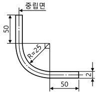
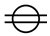
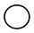
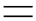
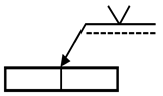
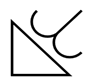
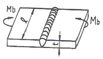
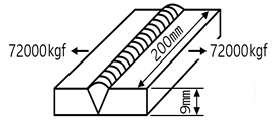
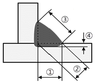
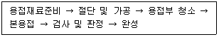

용접산업기사 (2008-07-27 기출문제)
1과목: 용접야금 및 용접설비제도
1. 주철 보수용접 시 균열의 연장을 방지하기 위하여 용접 전에 균열의 끝에 하는 조치로 다음 중 가장 적합한 것은?
- 정지 구멍을 뚫는다.
- 가접을 한다.
- 직선 비드를 쌓는다.
- 리베팅을 한다.
(정답률: 알수없음)

2. 강의 담금질(quenching) 조직 중 경도가 가장 큰 것은?
- 솔바이트
- 페라이트
- 오스테나이트
- 마텐자이트
(정답률: 60%)
3. 용접작업에서 예열의 목적이 아닌 것은?
- 용접부의 냉각속도를 빠르게 한다.
- 용접부의 기계적 성질을 향상시킨다.
- 용접부의 변형과 잔류응력 발생을 적게 한다.
- 용접부의 열영향부와 용착금속의 경화를 방지한다.
(정답률: 92%)
4. 오스테나이트계 스테인리스강의 용접 시 고온균열의 원인이 아닌 것은?
- 아크 길이가 짧을 때
- 크레이터 처리를 하지 않을 때
- 모재가 오염되어 있을 때
- 구속력을 가해진 상태에서 용접할 때
(정답률: 알수없음)
5. 용착금속의 결함이 아닌 것은?
- 기공
- 은점
- 선상조직
- 라미네이션
(정답률: 70%)
6. 입방정계에 해당하지 않는 결정격자의 종류는?
- 단순입방격자
- 체심입방격자
- 조밀입방격자
- 면심입방격자
(정답률: 34%)
7. 면심입방격자의 슬립(slip) 면은?
- (111)면
- (101)면
- (001)면
- (010)면
(정답률: 85%)
8. 철(Fe)의 비중은 약 얼마인가?
- 6.9
- 7.8
- 8.9
- 10.4
(정답률: 45%)
9. 용접균열은 고온균열과 저온균열로 구분된다. 크레이터 균열과 비드 밑 균열에 대하여 옳게 나타낸 것은?
- 크레이터 균열 - 고온균열, 비드 밑 균열 - 고온균열
- 크레이터 균열 - 저온균열, 비드 밑 균열 - 저온균열
- 크레이터 균열 - 저온균열, 비드 밑 균열 - 고온균열
- 크레이터 균열 - 고온균열, 비드 밑 균열 - 저온균열
(정답률: 70%)
10. 용접결함 중 언더컷의 발생원인이 아닌 것은?
- 전류가 너무 높을 때
- 용접속도가 느릴 때
- 아크 길이가 길 때
- 부적당한 용접봉을 사용할 때
(정답률: 59%)
11. 투상법 중 등각투상도법에 대한 설명으로 가장 적합한 것은?
- 한 평면 위에 물체의 실제모양을 정확히 표현하는 방법을 말한다.
- 정면, 측면, 평면을 하나의 투상면 위에서 동시에 볼 수 있도록 입체도로 그려진 투상도이다.
- 물체의 주요면을 투상면에 평행하게 놓고, 투상면에 대하여 수직보다 다소 옆면에서 보고 나타낸 투상도이다.
- 도면에 물체의 앞면과 뒷면을 동시에 표시하는 방법이다.
(정답률: 65%)
12. 주문하는 사람이 주문하는 물건의 크기, 형태, 정밀도, 정보 등의 주문내용을 나타낸 도면은?
- 계획도
- 제작도
- 견적도
- 주문도
(정답률: 72%)
13. 그림과 같이 판재를 90°로 중립면의 변화 없이 구부리려고 한다. 판재의 총 길이는 몇 mm인가? (단, π는 3.14로 하고, 단위는 mm임)

- 135.42
- 137.68
- 140.82
- 142.39
(정답률: 44%)
14. 핸들이나 바퀴 등의 암 및 리브, 혹, 축, 구조물의 부재 등의 절단면을 표시하는데 가장 적합한 단면도는?
- 부분 단면도
- 회전도시 단면도
- 조합에 의한 단면도
- 한쪽 단면도
(정답률: 93%)
15. 선을 긋는 방법에 대한 설명 중 틀린 것은?
- 평행선은 선 간격을 선 굵기의 3배 이상으로 하여 긋는다.
- 1점 쇄선은 긴쪽 선으로 시작하고 끝나도록 긋는다.
- 파선이 서로 평행할 때에는 서로 엇갈리게 그린다.
- 실선과 파선이 서로 만나는 부분은 띄워지도록 그린다.
(정답률: 29%)
16. 선의 용도가 특수한 가공을 하는 부분 등 특별한 요구사항을 적용할 수 있는 범위를 표시하는데 사용하는 선의 종류는?
- 가는 2점 쇄선
- 굵은 1점 쇄선
- 가는 1점 쇄선
- 굵은 실선
(정답률: 54%)
17. 용접 기호 중에서 스폿 용접을 표시하는 기호는?



(정답률: 47%)
18. 그림과 같은 용접기호의 설명으로 올바른 것은?

- 이응의 화살표 쪽에 용접을 한다.
- 양쪽에 용접을 한다.
- 화살표 반대쪽에 용접을 한다.
- 어느 쪽에 용접을 해도 무방하다.
(정답률: 알수없음)
19. 다음 그림과 같은 용접 보조기호를 바르게 설명한 것은?

- 오목하게 처리한 필릿 용접
- 용접한 그대로 처리한 필릿 용접
- 볼록하게 처리한 필릿 용접
- 매끄럽게 처리한 필릿 용접
(정답률: 72%)
20. 도형의 치수기입에 사용되는 기본적인 요소와 관계없는 것은?
- 외형선
- 치수보조선
- 지시선
- 치수 수치
(정답률: 알수없음)
2과목: 용접구조설계
21. 용접선의 양측을 일정속도로 이동하는 가스 불꽃에 따라 나비 약 150mm를 150~200℃로 가열한 후 바로 수냉하는 응력 제거방법은?
- 기계적 응력 완화법
- 피닝법
- 저온 응력 완화법
- 국부 풀림법
(정답률: 79%)
22. B 스케일과 C 스케일 두 가지가 있는 경도시험법은?
- 브리넬 경도
- 로크웰 경도
- 비커스 경도
- 쇼어 경도
(정답률: 50%)
23. 점용접의 3대 요소 중의 하나에 해당되는 것은?
- 용접전극의 모양
- 용접전압의 세기
- 용착량의 크기
- 용접전류의 세기
(정답률: 82%)
24. 다음 그림과 같은 완전 용입된 연강판 맞대기 이음부에 굽힘모멘트 Mb = 10000 kgf·cm가 작용할 때, 용접부에 발생하는 최대 굽힘응력은 약 ㎏f/cm2인가? (단, 용접길이 300mm이고, 판두께는 10mm이다.)

- 0.2
- 20
- 200
- 2000
(정답률: 53%)
25. 모재의 인장강도가 50㎏f/mm2이고, 용접 시편의 인장강도가 25㎏f/mm2으로 나타났을 때 이음 효율은?
- 40%
- 50%
- 60%
- 70%
(정답률: 77%)
26. 용접이음의 충격강도에서 취성파괴의 일반적인 특징이 아닌 것은?
- 온도가 높을수록 발생하기 쉽다.
- 거시적 파면 상황은 판 표면에 거의 수직이고 평탄하게 연성이 작은 상태에서 파괴된다.
- 파괴의 기점은 각종 용접결함, 가스절단부 등에서 발생된 예가 많다.
- 항복점 이하의 평균응력에서도 발생한다.
(정답률: 47%)
27. 응력제거 풀림의 효과에 대한 설명으로 틀린 것은?
- 치수틀림의 방지
- 열영향부의 템퍼링 연화
- 충격저항의 감소
- 크리이프 강도의 향상
(정답률: 40%)
28. 단위 시간당 소비되는 용접봉의 길이 또는 중량으로 표시되는 것은?
- 용접 길이
- 용융 속도
- 용접 입열
- 용접 효율
(정답률: 24%)
29. 용접변형 방지법 중 냉각법에 속하지 않는 것은?
- 살수법
- 수냉동판 사용법
- 비석법
- 석면포 사용법
(정답률: 79%)
30. 용접 지그의 사용 목적이 아닌 것은?
- 용접작업을 쉽게 하여 작업능률을 높인다.
- 용접공의 기능 수준을 높이고 숙련기간을 단축한다.
- 대량생산을 하기 위하여 사용한다.
- 제품의 정밀도와 용접부의 신뢰성을 높인다.
(정답률: 60%)
31. 설계단계에서의 일반적인 용접변형 방지법으로 틀린 것은?
- 용접 길이가 감소될 수 있는 설계를 한다.
- 용착금속을 증가시킬 수 있는 설계를 한다.
- 보강재 등 구속이 커지도록 구조 설계를 한다.
- 변형이 적어질 수 있는 이음 부분을 배치한다.
(정답률: 74%)
32. 일반적으로 용접이음을 설계하는데 충격 하중을 받는 연강의 안전율은 얼마로 해야 하는가?
- 12
- 8
- 5
- 3
(정답률: 40%)
33. 용접의 여러 결함 중 내부결함에 해당되지 않는 것은?
- 크레이터 처리 불량
- 슬래그 혼입
- 선상조직
- 기공
(정답률: 37%)
34. 용접부의 연성 결함을 조사하기 위하여 주로 사용되는 시험법은?
- 인장시험
- 굽힘시험
- 피로시험
- 충격시험
(정답률: 알수없음)
35. 그림과 같이 강판의 두께가 9mm이고 용접길이가 200mm이며 최대 인장하중이 72000㎏f이 작용하고 있을 때 용접부에 발생하는 인장응력은 약 ㎏f/mm2인가?

- 20
- 30
- 40
- 80
(정답률: 알수없음)
36. 용접작업에서 가접 시 주의하여야 할 사항으로 틀린 것은?
- 용접봉은 본 용접 작업 시에 사용하는 것 보다 약간 굵은 것을 사용한다.
- 본 용접과 동일한 기량을 갖는 용접자로 하여금 가접 하게 한다.
- 본 용접과 같은 온도에서 예열을 한다.
- 가접의 위치는 부품의 끝, 모서리, 각 등과 같이 단면이 급변하여 응력이 집중되는 곳은 가능한 피한다.
(정답률: 81%)
37. 용접할 때 발생하는 변형을 교정하는 방법으로서 틀린 것은?
- 두꺼운 판에 대한 정 수축법
- 절단에 의하여 성형하고 재용접하는 방법
- 가열 후 해머링 하는 방법
- 두꺼운 판에 대하여 가열 후 압력을 가하고 수냉하는 방법
(정답률: 17%)
38. 일반적인 각변형의 방지 대책으로 틀린 것은?
- 역변형의 시공법을 사용한다.
- 용접속도가 빠른 용접법을 이용한다.
- 판 두께가 얇을수록 첫 패스 측의 개선 깊이를 크게 한다.
- 개선각도는 작업에 지장이 없는 한도 내에서 크게 하는 것이 좋다.
(정답률: 54%)
39. 그림과 같은 필릿 용접에서 목 두께를 나타내는 것은?

- ①
- ②
- ③
- ④
(정답률: 72%)
40. 용접부의 부식에 대한 설명으로 틀린 것은?
- 입계부식은 용접 열영향부의 오스테나이트입계에 Cr이 석출될 때 발생한다.
- 용접부의 부식은 전면부식과 국부부식으로 분류한다.
- 틈새부식은 오버랩이나 언더컷 등의 틈 사이의 부식을 말한다.
- 용접부의 잔류응력은 부식과 관계 없다.
(정답률: 73%)
3과목: 용접일반 및 안전관리
41. 용접기에 대한 구비 조건에 대한 설명으로 옳은 것은?
- 역률 및 효율이 좋아야 한다.
- 사용 중에 온도 상승이 커야 한다.
- 전류 조정이 용이하고 전류 변동이 커야 한다.
- 아크 발생이 잘되도록 직류일 경우 무부하 전압이 90V 이상이어야 한다.
(정답률: 93%)
42. 다음 중에서 용접기의 수하특성과 가장 관련이 깊은 것은?
- 저항 - 열의 특성
- 전류 - 전력의 특성
- 전압 - 전류의 특성
- 전력 - 저항의 특성
(정답률: 64%)
43. 교류 아크 용접기에 해당되지 않는 것은?
- 탭 전환형 아크 용접기
- 가동 철심형 아크 용접기
- 가동 코일형 아크 용접기
- 정류기형 아크 용접기
(정답률: 71%)
44. 납땜에 사용되는 용제가 갖춰야 할 조건으로 틀린 것은?
- 용제의 유효 온도 범위와 납땜 온도가 일치할 것
- 전기 저항 납땜에 사용되는 용제는 부도체일 것
- 모재나 땜납에 대한 부식 작용이 최소한 일 것
- 납땜 후 슬래그의 제거가 용이할 것
(정답률: 57%)
45. 가스용접의 연료가스 중 불꽃 온도가 가장 높은 것은?
- 아세틸렌
- 수소
- 프로판
- 천연가스
(정답률: 50%)
46. 교류 아크 용접기에서 용접전류의 조정범위는 정격 2차 전류의 몇 % 정도인가?
- 20~110%
- 40~170%
- 60~190%
- 80~210%
(정답률: 알수없음)
47. 다음 금속 중 냉각 속도가 가장 빠른 것은?
- 구리
- 알루미늄
- 스테인리스강
- 연강
(정답률: 알수없음)
48. 산소 호스는 몇 ㎏f/cm2 정도의 압력으로 실시하는 내압 시험에서 이상이 없어야 하는가?
- 90
- 70
- 50
- 10
(정답률: 28%)
49. 교류용접기와 비교한 직류용접기 특징 설명으로 맞는 것은?
- 아크안정이 우수하다.
- 전격의 위험이 많다.
- 용접기의 고장이 적다.
- 용접기의 가격이 저렴하다.
(정답률: 20%)
50. 초음파 용접법으로 금속을 용접하고자 할 때 이 용접법에 알맞는 금속 모재의 두께는 일반적으로 몇 mm 정도가 가장 좋은가?
- 0.01~2
- 2~5
- 8~9
- 10~20
(정답률: 46%)
51. 피복금속 아크 용접법에서 탈산제는 용융금속 중의 무엇을 제거하는 작용을 하는가?
- 질소를 제거하는 작용
- 산소를 제거하는 작용
- 탄산가스를 제거하는 작용
- 규소를 제거하는 작용
(정답률: 70%)
52. 용접 작업이 다음과 같은 과정으로 진행되는 경우에 가장 적합한 것은?

- 가접
- 용접자세
- 도장
- 전개도
(정답률: 34%)
53. 일렉트로슬래그 용접의 특징 설명으로 틀린 것은?
- 후판 용접에 적당하다.
- 용접 능률과 용접 품질이 우수하다.
- 용접진행 중 직접 아크를 눈으로 관찰할 수 없다.
- 높은 입열로 인하여 용접부의 기계적 성질이 좋다.
(정답률: 16%)
54. 가스용접에서 수소가스 충전용기의 도색 표시로 맞는 것은?
- 회색
- 백색
- 청색
- 주황
(정답률: 69%)
55. 산소－아세틸렌 토치로 3.2mm 이하의 모재를 용접 시 차광유리의 차광번호로서 가장 적합한 것은?
- 4~5
- 6~7
- 8~9
- 10~11
(정답률: 30%)
56. 이산화탄소가스 아크 용접에서 솔리드 와이어 혼합법에 속하지 않는 것은?
- CO2 + O + N
- CO2 + O2
- CO2 + Ar
- CO2 + CO
(정답률: 48%)
57. 정격 2차 전류 300A의 용접기에서 실제로 200A의 전류로 용접하면 허용 사용률은 얼마인가? (단, 정격 사용률은 60%이다.)
- 43%
- 90%
- 135%
- 30%
(정답률: 53%)
58. 가스 압접의 특징 설명으로 틀린 것은?
- 이음부의 탈탄층이 전혀 없다.
- 장치가 간단하여 설비비, 보수비가 싸다.
- 용가재 및 용제가 불필요하다.
- 작업이 거의 수동이어서 숙련공만 할 수 있다.
(정답률: 알수없음)
59. 주로 상하부재의 접합을 위하여 한편의 부재에 구멍을 뚫어 이 구멍 부분을 채우는 형태의 용접방법은?
- 필릿용접
- 맞대기용접
- 플러그용접
- 플래시용접
(정답률: 91%)
60. 플래시 용접의 특징 설명으로 틀린 것은?
- 가열범위가 좁고 열 영향부가 좁다.
- 용접면을 아주 정확하게 가공할 필요가 없다.
- 서로 다른 금속의 용접은 불가능하다.
- 용접시간이 짧고 전력 소비가 적다.
(정답률: 39%)